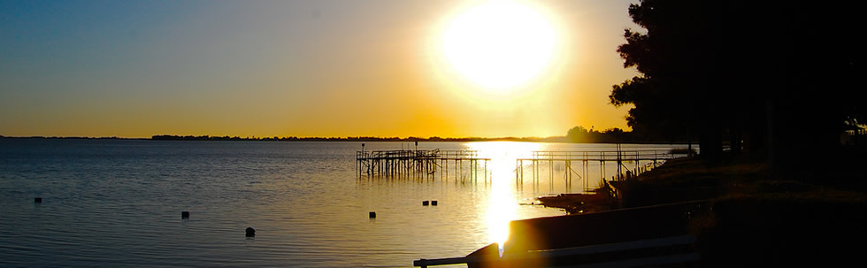
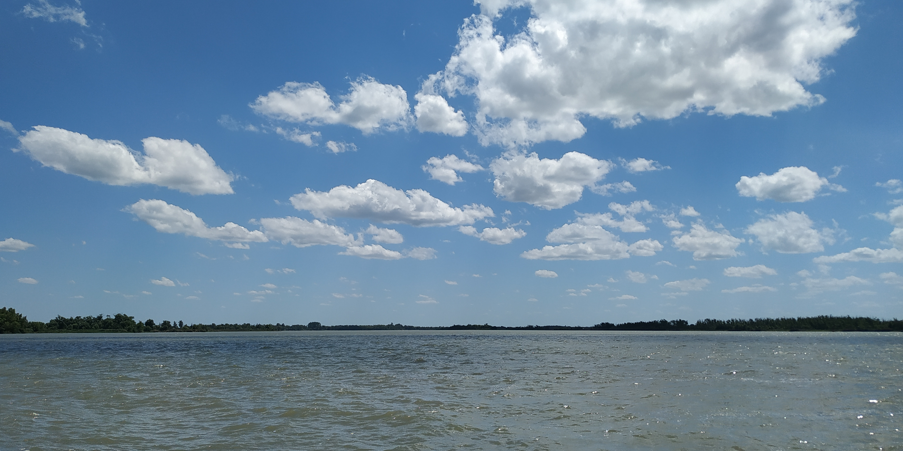

Lugares de Pesca
Regiones de la Republica Argentina
Lagunas
La cuenca del plata cuenta con amplica cantidad de espejos de agua dulce y es posible pescar en practicamente todos ellos. Lagunas como la de Lobos, Chascomus o Chasicó son lugares excelentes para practicar la pesca de orilla o embarcado, de fondo como a flote.
Ríos
Existen muchísimos ríos en toda la Argentina para practicar todos los tipos de pesca. En el noroeste existe el rio Paraná el cual cuenta con muchos brazos e infinitos lugares para poder disfrutar la pesca de grandes peces como el Dorado, el Surubí, Mandsubí, Patí, Rayas, Pacús, Bogas, entre otros.
Existen muchísimos ríos en toda la Argentina para practicar todos los tipos de pesca. En el noroeste existe el rio Paraná el cual cuenta con muchos brazos e infinitos lugares para poder disfrutar la pesca de grandes peces como el Dorado, el Surubí, Mandsubí, Patí, Rayas, Pacús, Bogas, entre otros.
Mar
Nuestro pais cuenta con un extensísimo litoral marino en el que encontramos una notable diversidad de formas de vida. La extensa llanura pampeana ingresa al mar generando costas de suave declive que extienden a la zona litoral por varios kilometros. En contraste , la meseta patagónica termina en abruptos acantilados que se enfrentan a la fuerza del oleaje que los cava, dando origen a intrincadas formaciones como las "grutas" en la provincia de Rio Negro.